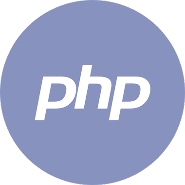
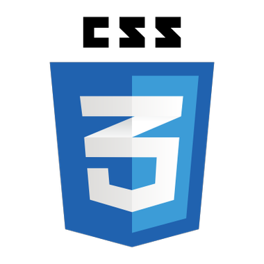
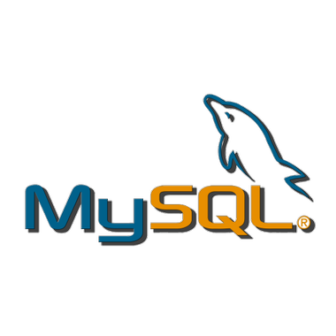
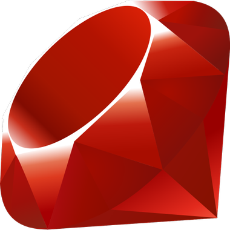
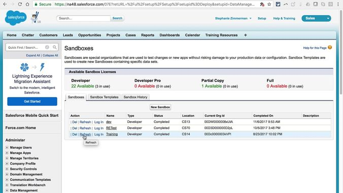
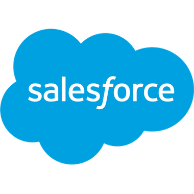

Réseau Social en PHP



Projet ADA
Réalisation d'une base de réseau social en PHP hébergé sur un serveur XAMPP avec des requêtes vers la base de données phpMyAdmin faites en MySQL.
Voir Code
Jeu Vidéo - Pico 8
Projet ADA
Réalisation d'un jeu vidéo dans le langage Lua à partir d'une console virtuelle appelée Pico 8. Le jeu vise à sensibiliser sur les remarques sexistes pouvant être subies par les femmes.
Voir Code
Chatbot en Ruby

Projet ADA
Réalisation d'un chatbot en Ruby qui permet, à partir d'un fichier json, de trouver des recettes de cuisine correspondant aux ingrédients de notre frigo.
Voir Code
Site Web Sharpn


Chef de Projet
Réalisation du site internet de la nouvelle Business Unit de Sowefund sur Webflow en collaboration avec le directeur artistique de Sowefund.
Voir Site
Automatisation AGO

Chef de Projet
Automatisation dans le BO de la gestion des Assemblées Générales Ordinaires des Holdings créées lors des levées de fonds en collaboration avec un Developer.
Voir Figma
Optimisation Salesforce

